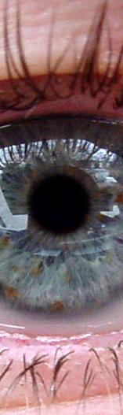
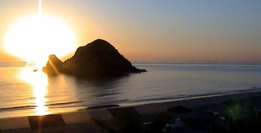
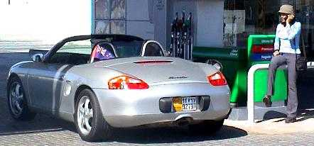
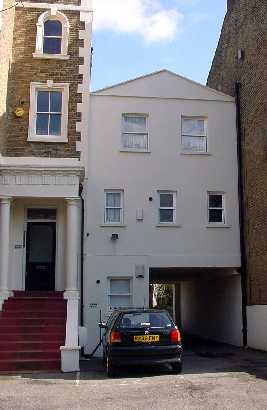

The marble chess set (a bit on the heavy side)
21 March 2001

I remember when I was little, I used to think about what I would be doing in the year 2000. All I can remember thinking is that I would be 28, and boy did 28 seem ancient to a 10 year old! But I made it (to 28 at least) and 2000 has come and gone. It sort of blew me away to tell you the truth.
I've covered 2000 in my previous travelogues, but basically I started the year on Mount Ruapehu, and ended it in a nightclub in Dubai. Two pretty radically different places...
In between quite a bit happened. I left Westhill Communications and took up a 6 month contract with Mercator in Dubai. I was pretty happy to do so, as the rates I had managed to negotiate were pretty reasonable even compared to what some of my peers are getting in London! I managed a trip back home for Meika's wedding. Got the occasional trip to the UK
Well, it was a little rushed and not a little saddening to be leaving Dubai. Sure I wasn't going to miss the homicidal tendencies of Dubai's drivers, but after coming to grips with leaving the place I realised that I had grown fond of all that luxury. Really the standard of living is pretty high. There is a sort of a joke going around about a UK family who go to live in London, but the kids were brought up in Dubai. The first thing out of their mouths would be something like "Where is the swimming pool? Where is the gym? Where is the sun? Why aren't we living in a huge 4 bedroom villa. This place is like a cupboard!".
Ahhh... You've got to laugh don't you. (Or not, if you didn't find it particularly funny. I guess you had to be there)
New Years eve was a bit of a laugh. We left it WAY too late to head out, and ended up paying some ridiculous cover charge to spend it at Diamonds nightclub. It was worth it though, an experience I will never forget. ;-)
My repatriation flight back to London after finishing my contract was for the 3rd of January. Which didn't really leave me much time to organise my life. I had to get everything shipped back to the UK (including my baby) but what made that task particularly difficult was everything had been closed for several days leading up to New Years. The end of Ramadan just happened to coincide with 'Silly Season' with the rest of the world, so I had some last minute panic stations trying to get everything organised. It wasn't helped by the Porsche breaking down with yet ANOTHER Air Flow meter fault. That's really beginning to piss me off. (I should have bought a real car!) Fortunately it is still under warranty, so I was able to get Porsche to fix it, but it is a worry...
After getting to London, it was a quick trip off to Canada to get a little bit of snowboarding in. I didn't break any ribs this time, just managed to sprain my wrist, but that wasn't too bad really. The conditions at Whistler were just awesome! I would thoroughly recommend it to anyone. If you are after accommodation there, try Peak to Green Accommodation. They gave us a pretty good deal, and while it might seem expensive when you are handing out the cash, it is worth every penny of it!
Got a couple of lessons with Arne, a crack-up snowboard instructor! Top lad really. He took some pretty good footage, with Marcus's video camera, of us making fools of ourselves on the slopes. But I think we all dramatically improved our technique with Arne. To the point of doing black runs at the end of the day in reasonable comfort. Admittedly, I think black runs in Whistler might be a bit tame compared to other ski fields, but considering the only other place I've skied is in NZ, I don't really have a huge frame of reference.
Vancouver has a lovely vibe. It's a beautiful place, and I think I was beginning to understand why it won the "worlds best place to live" title. Mike and Brenda are off there to live at some undefined date in the future, and I for one look forward to going and visiting them there.
I ended up returning to London, then heading straight back out to Dubai. There were a few things I needed to retrieve for a project I was about to start. And I also had some loose ends to tidy up with exporting all of my gear. Overall it was a pretty successful trip.
Liezl and I went and stayed the weekend at Sandy Beach Motel in Fujeira. My boss at Westhill had taken his wife there when he was out once, and said that the place was pretty good, so we thought we'd give it a try.

The view from our room at Sandy Beach
The motel was pretty good value. It was kind of weird staying there, as most of the guests were Russian. Neither of us felt like we were in the Emirates at all. The weather was sunny but cool, and there was next to nobody around. I liked that. Especially cruising around the mountains. Most of the time we were the only vehicle in sight. It was a good time to try out the new stereo system I'd had installed too! Loud!

Liezl having a quick chat on the phone outside Fujeira
After the weekend we went back to Dubai. I stayed there for the rest of the week before returning to London. I managed to sort pretty much everything out as far as exporting my car and household contents. I grab the few essentials I needed urgently, as the container ship was going to take over three weeks to deliver everything. (actually, longer as it turned out, so it was just as well...)
I just started a new development contract, this time working for myself. I thought it was the right way to grow as a project manager cum analyst/programmer. It's not plain sailing, but on the whole it's going pretty well. We've just finished requirements development and the detailed design. Most of the back-end is finished already, but there is still a huge amount of work to do on the front end.
I'm not so sure I'll continue working for myself though. For starters I need to sort out another visa reasonably promptly. My current one runs out in June, so I've got to get my act together, otherwise I'll be forced to return to NZ or Aussie. Also it's pretty stressful working for yourself. Especially when the money starts to run low, and there is no guaranteed income to speak of.
I've got a few possibilities already lined up, one in Dubai, a couple in
London and another in the States, but the main thing I am looking for is career
growth and job satisfaction. Money is beginning to be less important now.
Perhaps I should head back to Dubai. At least then I'd be able to play golf
every day. :-)
Oh, maybe not every day. Summer is a bit too hot for it really, so you need to
take a few months off. But Ramadan is great these days. The Pros over there call
it the holy month of golf. There is sweet FA to do, and everyone knocks off
earlier. I really miss that.
I headed back to Dubai for a short break. It was pretty good timing as far as the project was concerned, I managed to take my laptop and a whole lot of documentation along with me, so it wasn't like I had nothing to do. Not so sure I like the road warrior idea though. Sometimes it's nice to totally escape work to let your brain recharge.
It was great to see Liezl again. We went out to Global village, which is like a quick tour of many of the local countries. The Iraqi village looked pretty third world when you considered it in context to the rest. The crafts and handiworks on sale there had a real primitive quality about them. Whereas the Jordan, Syria, India, Thailand and Egypt villages were pretty cool. I bought myself a reasonably nice backgammon board from Syria village (made in Pakistan), but it wasn't as awesome as the one from Jordan Village. I just could justify spending the huge amount of money for the better board. (I don't have much money to throw around at the moment)
I had planned on talking to the guys at my old work. I'm interested in getting work back there if it looks good enough. As yet I am not sure what is going to happen once this current contract finishes... Unfortunately I didn't manage to get around many people at all. There were Eid holidays on, and I only really had a couple of days there. The one working day I had available to me was fully booked up. So I didn't get any time for social calls at all.
Something that was funny, is the guards in my building had lost the key for my old apartment, so I had to sort that out as well. Don't know where the key went. I'd left it on the guards desk the morning that I left for London. Looks like it just disappeared. Fortunately I'd left a window slightly open, so I climbed in the window to retrieve one of the spare keys to hand back into accommodation. After two months of a slightly open window though, most of the floor was covered in sand, so Liezl and I spent about a day just cleaning the flat. (not really what we'd had in mind...)
The marble chess set (a bit on the heavy side)
The Dubai shopping festival is on the whole of March too. I'd missed Tiger Woods at the golf open, but I did manage to score some good deals at some of the street stalls around the place. I bought myself a marble chess set along with a wooden chess set. Both for about £16. The marble chess set was damn heavy though. I regretted buying it after lugging it through the airport at Athens as well as to my flat in London. My arms were almost dropping off!
And the wooden one. (Nice and light!)
I managed to find a nice flat in London. This time I'm living in Lee Green, which is a pretty nice area considering it is South-East London. But the flat itself is great. Another fluke really. I had popped into Westhill to say hi to JT, and met Darian the resident network support guru. He had a room available and offered me a look at it if I was interested. I went over a few days later, and the place was pretty good. Definitely not your standard pokey little room that London tends to offer. Another bonus was the double parking bay out the back of the house. I was getting a little concerned about parking my baby in London, and having some decent off street parking helps with the horrendously expensive insurance charges.

My New Flat
Alright! It's so nice to drive my baby again. Can't believe I've missed this hunk of junk. Importing my gear into the UK was a lot more straightforward than exporting it from Dubai. Why do things (apart from banking) seem so much simpler here? Although I must admit. it was pretty pricey. Not so sure it was the smartest thing to do, but I wasn't keen on getting rid of the car just yet.
I hope to go for a few trips to the continent over the next year, and the Porsche is the perfect car to do that in. It won't be too weird having a left hand drive vehicle in London as you don't really need to drive inside the city. And I don't ever plan to commute with the car. At least, not unless I get a job out of London. Now that is a thought!
I've still got a bit to do before I can drive the car though. There is a small matter of registration plates to handle first. But I'm hoping to get that sorted reasonably quickly. It's not like I need the car right now... Fortunately you can get away without one in London.
Who knows what is in the pipeline. I really don't know what sort of plans I've got for more than a couple of months into the future. I'm sort of being a bit reactive that way. I still keep my eyes open for opportunities, and I try to be flexible if the situation requires it. But on the whole I'm just seeing where things lead, not really trying to direct anything to be a certain way.
I'm a little shocked that we are already a quarter of the way into 2001 though. Time really seems to be flying along. It's hard to believe that my 2nd MD717 (big white leave pass) anniversary is coming up in only a couple of weeks.
To those Avionics boys who don't know about it, there is a reunion coming up. It is planned to take place in Auckland, March 15-17 2002. Check out the following site http://www.RNZAFAvionicsReunion.com for details.
Other than that, please everyone keep in touch. It's really cool to get emails from home, and although I'm on the other side of the planet, I still think about everyone a lot.
Take care,
Until next time...